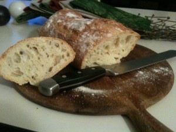

I’ve been learning about baking bread.
This all started by reading (most of) the book Ratio – which is a fantastic book about the fundamentals of cooking. I bought the Kindle version of this book for my iPhone so I could read it on the train – which is great – but it’s also horrible because I don’t mind getting buttery fingerprints on a cookbook but I do mind dropping my $400 toy into a bowl of wet dough.
From this book I learned that bread was not that mysterious and started making a few loaves.
After that I started learning a little bit more. The internets are full of wonderful, sloppy, contradictory information about bread making.
But I’ve learned a few things which I didn’t really understand before. e.g. Kneading is an option, not a requirement.
Before I tried any bread making I had run across a couple of “no knead” bread recipes. My gut feeling was that this was some hocus-pocus nonsense that resulted in some bread-ish product that wasn’t very good.
I was as surprised as anyone to discover that I was wrong.
The first several loaves I made were good. They looked good, tasted good, they were good. But I wasn’t getting that big open crumb you see at the fancy bakery. I thought maybe I wasn’t kneading enough, or I wasn’t letting it rise enough, or something. The problem was that I misunderstood kneading and bread.
Bread – not a cracker, pie crust, cake, or biscuit – is the way it is because it is built from an intertwined web of gluten. Gluten is what happens when the proteins in wheat get together with water and have a party. The resulting aftermath is a stringy network of proteins. Water also breaks down some of the starches in bread into simple sugars. When yeast shows up to the party, yeast is all like ‘sup sugar, chows down, and farts out carbon dioxide.
The web of gluten holds the yeast farts in. Once the bread is baked, gluten hardens, the yeast is killed (the glorious bastards), but the shell of their fart bubbles remain as the only evidence of their existence. This also makes bread spongey, sproingy, and delicious.
So to make bread you have to have some water. If there’s a lot of water molecules can just slip and slide around, the yeast gets fed, and gluten forms all by itself. This takes some time – like 12 hours or better – but it happens all by itself.
If you have relatively little water, you have to help things along with kneading. Kneading is like pouring your shy protein molecules a drink (of water) and forcing them to dance. Yeast goes along for the ride. Yeast likes to party.
When there’s a lot of water, the naturally formed gluten network is random, open, and irregular.
When you knead bread you are mechanically forcing the creation of this network, which usually results in a much tighter and compact network of yeast fart bubbles.
This is your classic trade off.
If you want a tight, well structured dough that you can shape into anything you want (and have it ready to eat in a couple of hours), then you knead.
If you’ve got time to kill and you want something flavorful, rustic, with big holes you can fill with olive oil – you go for the no-knead-let-it-rest-in-a-bowl-overnight method and let the magic happen.
There are, of course, places in between on this spectrum.